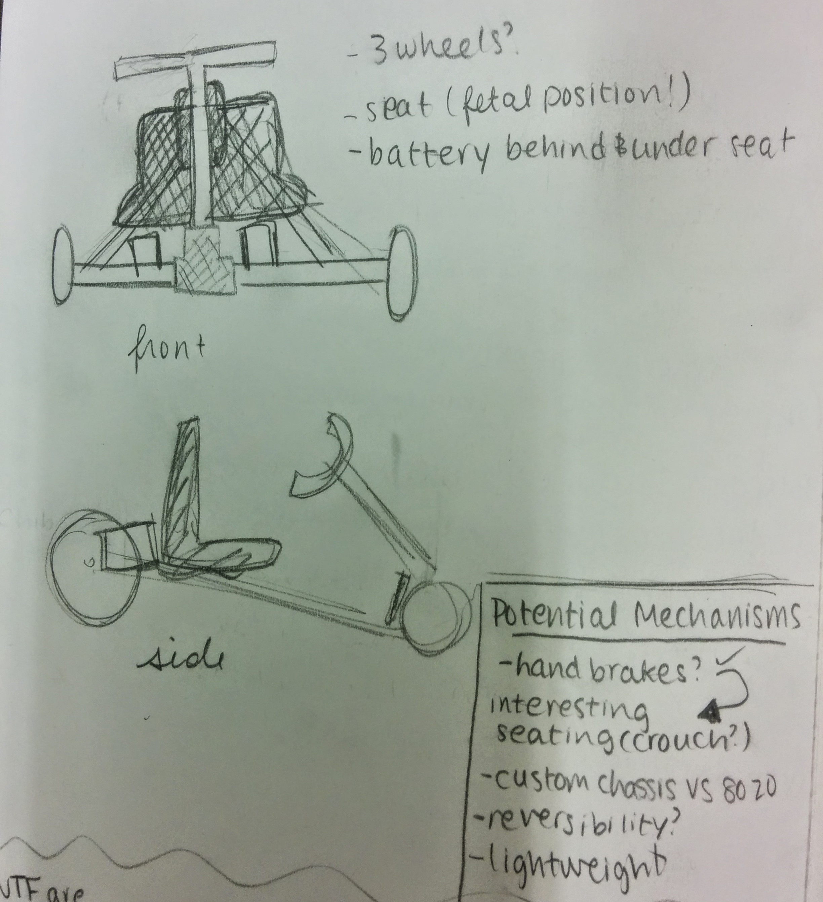
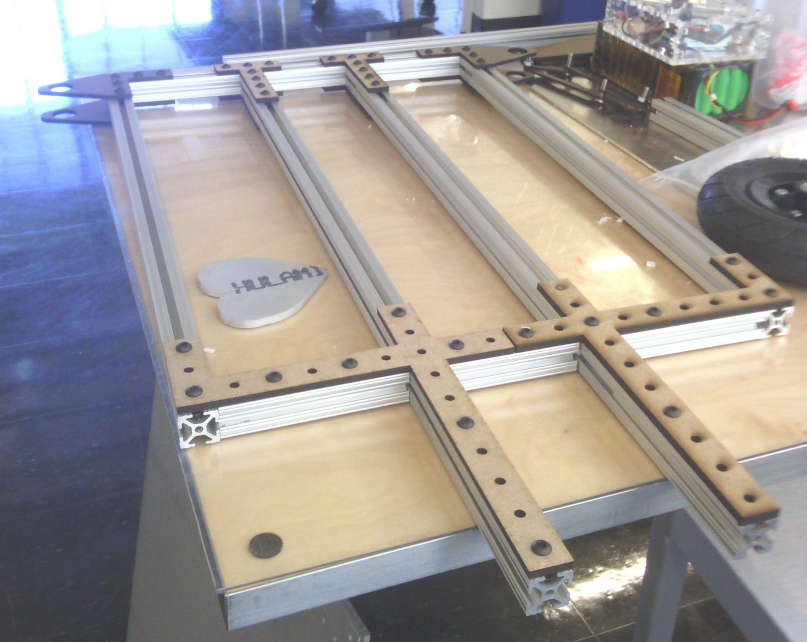
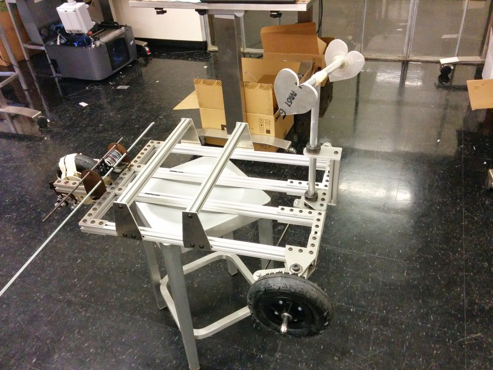
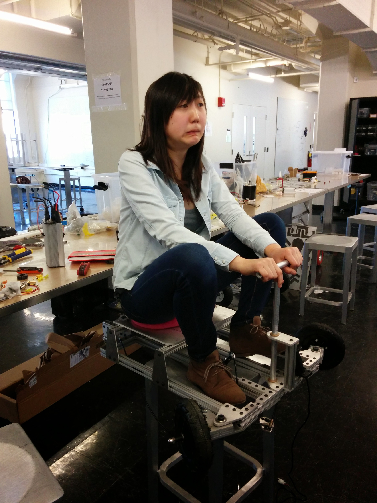

CONNIE LIU
FAST AND FURIOUS
with a dash of love (handles)

Meet Lovehandles. Packed in that small(ish) exterior is 36V of battery, a Turnigy SK3 brushless motor, a full size Kelly controller, and enough power to hit 20 mph with a single rider.
Lovehandles was the brainchild of Rachel Lathe and me during the special section of MIT's Design and Manufacturing class (2.007), affectionately referred to 2.00Go Kart. We were posed with a few design constraints from the start: no more than four 12V batteries, a maximum speed of 20 mph (for safety reasons), the ability to carry a single rider, and a cost of less than $500. With these parameters in mind, we set out to conceptualize, design, and finally build Lovehandles.
Our go kart started as a few early stage, somewhat unrealistic ideas. After completing design critiques with the class instructors, we redrafted our plans. Lovehandles began to take shape.
Our initial prototypes began with MDF brackets and lots of masking tape. To test sizing and avoid wasting expensive parts, we laser cut MDF to test our parts before sending them over to the water jet to make them out of aluminum. This act of precaution helped us realize that our original design was susceptible to high bending stresses. We added additional support beams to help the structure carry heavier weights. We also re-designed the electronics deck to make the parts more serviceable if a fuse blew or the controller broke in the middle of the race (both of which happened).
 This progressed to much larger challenges. Our steering design went through many phases as we tuned it to minimize turning radius and maximize safety at high speeds. In addition, our efforts to keep the vehicle small led to fancy maneuvering to fit all of our parts in for the back wheel assembly, resulting in a highly efficient design that maximized the power translated from the motor torque to the rear wheel drive. For your enjoyment, here is a picture of me having loads of fun on our nearly completed go kart!
Lessons Learned
Designing and building Lovehandles was a lot of fun, but also a huge learning experience. In honor of my love of lists, here are a few skills I picked up along the way, in list form:
Budgeting: One large component of the class was our weekly purchase orders. Material purchases could only be made on a single day each week, and that meant lots of planning purchases way ahead of time. With this and the $500 budget constraint, obtaining supplies became a struggle, especially during the later weeks.
Shop Smarts: This was my introduction to using many of the tools that I now know and love, and under the helpful guidance of the shop staff, I am now an expert on all things dremels, cold saws, lathes, and more.
Designing for Assembly: This was not only a lesson in designing realistically in Solidworks, but also in not ordering the cheapest materials from Mcmaster-Carr with the expectation that it would be of the highest quality. We learned that "You get what you pay for" definitely applies as we spent hours sanding down shafts and finding replacement sprockets to compensate for our mispurchases.
Time Management: Despite our many fortuitous successes, there were definitely things we could have improved with more time. For example, I would have loved to enable a reverse driving mode on our kart. The controller we bought had a ton of cool features that we could have enabled, but we were unable to explore many of them during the duration of the class.